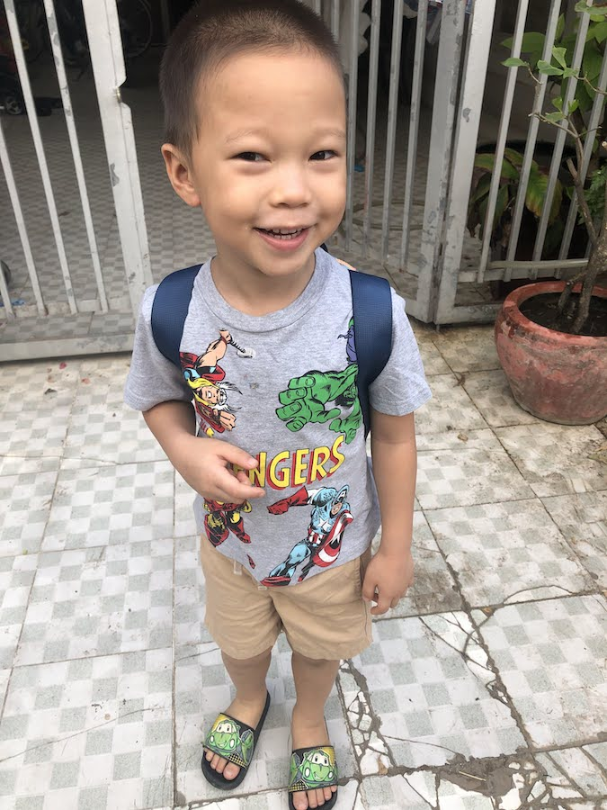
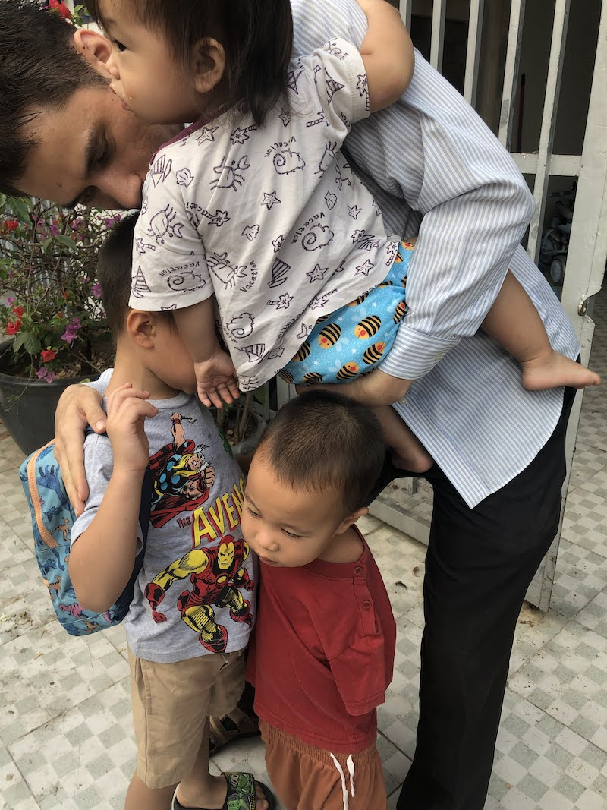

A Very Warm Spring in Phnom Penh
Brothers and Sisters in Christ,
Phnom Penh Bible School (PPBS)
About to head to Kampot for their ministry trip! As a foreigner we always get asked the same question whenever we meet someone new, regardless of whether they’re Khmer or another expat: “How long have you been in Cambodia”? We don’t mind of course – indeed, it is a near constant reminder of God’s faithfulness to us these last four and a half years. We haven’t been here long enough to be real veterans, but lately it has struck both of us, what a privilege it is to be able to serve here, to be involved in the life of the church here and to just teach and live the things of the Lord with the brothers and sisters here. It’s often messy of course, as life in the present age always is, but we can cling to the promises of God, to give hope both in this life and in the life to come.
My favorite scene in Pilgrim’s Progress is when Christian gets trapped in the Doubting Castle, locked in there by the Giant of Despair. Night after night he is beaten, mocked, accused, and threatened to the point where he is just about to lose hope - until he finally remembers that he has had the key to get out of Doubting Castle the whole time, just there in his pocket: the promises of God.
How relevant that picture is – no matter whether one is slugging it out in a prison in England or in the trenches of ministry in Cambodia (or wherever God has called us for that matter).
That’s perhaps the other reflection that comes to mind as we think about our time here in Cambodia: as much as some things are remarkably different between American, Western culture and Cambodian culture, we are seeing more and more how things are remarkably the same. A couple weeks ago I (Ryan) had the opportunity to go down to Kampot province with some of the Bible School students on a field ministry trip. Every year the school sets aside four days of the year for small groups to visit like-minded churches throughout Cambodia. It’s a good opportunity for students to be exposed to other ministries and churches that they’re not familiar with, for the sake of their own learning and growth as well as to be a service to pastors and ministries they go to visit.
It was a good opportunity for me as well. It was great for spending time with the students, and especially on the ride home (which happened to be in the back of a pickup truck, but that’s another story) where we had lots of time to discuss life, ministry, and future plans.
It was also helpful for learning about the students. One thing that struck me in particular is how I need to be more intentional in class time as well as just in conversation to shepherd the students, point them to Christ and remind them of the gospel.
It was also a good time for thinking about ministry in the province. The place where we are at is fairly remote, and quite different from life in the bustling city of Phnom Penh. While there we had a couple chances to visit some of the houses in the village to share the gospel. We have done house visits to church members in a different village in the past, but it was a first for me doing door to-door evangelism. I received good feedback from a brother while there: just preach the gospel and trust that God will use that to impact lives. Can’t argue with that!
PPBS Team with some volunteers and missionaries who serve at the ministry center in Kampot We also got to see various aspects of the ministry center there. This particular place has been run by a long-time missionary. The center is used both for the church who meets on Sunday as well as various children’s programs throughout the week. Often missiologists frown against missionaries being long-term pastors, perhaps especially at this stage in the Cambodian Church’s growth and development - the idea being, at this stage, foreigners need to step back and let Khmer believers pastor and lead. There is some truth to that, but on the other hand we were definitely encouraged by the health and vibrancy of the church there.
It was great to see how the children’s program plays into their ministry strategy. It might come as a shock for some of you to hear that their Sunday School starts at 6:30am - and even more shocking that they had to tell kids that they can’t come before 6:00! (For those wondering, this is not anything like what we normally experience in the city!)
Praying with members of the church The students from the Bible school rightfully observed that students who participated from an early age and continue on through high school all have a very strong commitment to Christ and know His Word well.
Overall, I’m very grateful to have been able to go. We’re hoping on visiting again actually as a family at the end of this month, in part to get to know the missionary down there more, in part for Rebekah to get ideas as we continue to prepare to leave Phnom Penh and do ministry outside the city at the end of next year. We are planning on going to a different province, but the context will be similar enough that I’m sure the principles will be transferrable.
Please pray for our time there.
Meeting villagers and sharing the Gospel in Kampot
Rebekah playing Cambodian game at PPBS Khmer New Year Party
PPBS TA got married to one of Ryan’s students!
Local Church
Celebrating Ryan’s birthday with his small group We have been thankful to continue being part of our small groups at our local church. Ryan has been given some opportunities to teach and preach as well. Rebekah is also still helping in the children’s ministry. However, the past few months have been difficult in that due to health and sicknesses, we’ve had to miss a number of Sundays.
Our church is also undergoing leadership changes that seem less than ideal, but we know of course, that God is in control. Please pray for this transition and for the health of the church overall. Much like any other church, it is easy, at times, to get caught up in the “good” and forsake the best. Please pray for wisdom for the leadership as well as for us, as we try to help build the church however the Lord sees fit.
ACTION and Translation Team
Hanging out with the Chheangs
ACTION men weekly meetings
Lately, Ryan has been helping edit an Ephesians commentary written by a Khmer brother. We are excited to see it aid many laborers for Christ!
We are trying to continue spending time with our teammates and encourage and build them up. We are thankful for their faithfulness and care for us.
Family
 Jonathan’s first day! One of the biggest changes for us in the past couple months is that Jonathan has started attending a Khmer school for a few hours each morning! The first week or so was challenging, but now he loves going to school and he often initiates times of prayer at home for his classmates, teachers, etc. Although his Khmer speaking is not on the same level as his peers, he has not been discouraged and wants to continue learning! We’ve been so thankful that he doesn’t see himself as so different from his Khmer classmates or seek to separate himself. We’re hoping and praying this leads to a greater love for Cambodians and for people in general. Please pray for wisdom as we are experiencing many “firsts” in this new territory!
We have also been a bit worn down by sickness the past few months– Rebekah is pregnant and her morning sickness/fatigue was more severe this time than previous pregnancies.
 Hugs goodbye before taking him to school Prayer Requests:
- Rebekah is pregnant with our fourth, who is due in October. Praise God for this gift, but also prayer for energy for Rebekah (especially with the hot season here and wanting to be faithful to ministry opportunities and training up our first three kids in the meantime)
- We are thankful that the ministry at the Bible School is going well, and have been able to invest more and more into students’ lives, even outside of the classroom.
- One concern has been seeing some indications of a lack of clarity in regard to some key gospel truths in students’ lives. Of course, all of us need these reminders about fundamental gospel realities - but just to say, pray for more opportunities to point students back to the gospel.
- The end of the semester is near, and students are tired. We do have a neat opportunity coming up though: a guest speaker is coming to share about his work with a minority people group in Cambodia. Many Cambodians feel like it is too difficult to do ministry with this particular minority group, and tend not to associate too closely. Pray that it would be fruitful and challenge students to think more carefully about what their role is in the Great Commission, whether as a sender or a goer, and whether that means reaching out more to neighbors from this minority group in their neighborhood or some other people group.
- Pray for our church
- Our kids are doing well, it’s been so encouraging to see more of what Jonathan and Samuel have been thinking about as they get older and understand and articulate more. Please pray for their salvation and growth in true knowledge of the Lord.
For His glory,
Ryan and Rebekah
Time with friends for Khmer New Year Another missionary, William, we’ve been blessed by